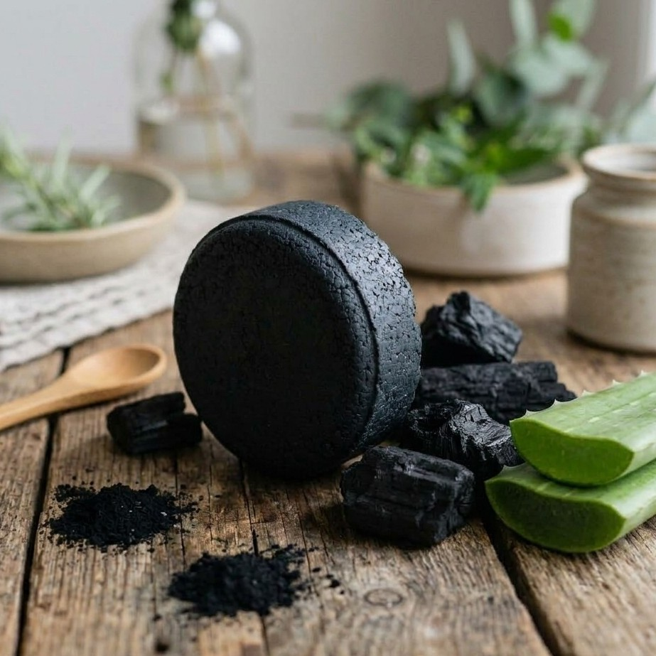

Purificante & Detox

Jabón de Carbón con Menta
$59.00
MXN
¡Tienes que probarlo! Atrae toxinas e impurezas de la piel como un imán mientras purifica y refresca profundamente.
Efecto Lifting: Tensa los poros visibles de la piel y reduce notablemente inflamación y rojez.
- Suaviza y regenera la barrera de la piel
- Elimina puntos negros, espinillas y suciedad
- Cierra poros y controla el exceso de grasa
- Astringente natural muy útil en acné